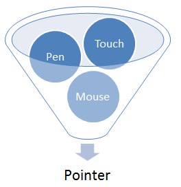
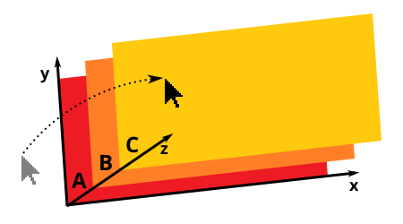
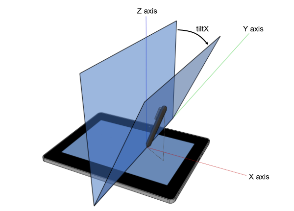
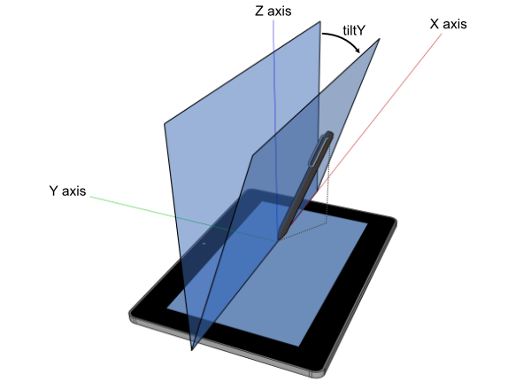
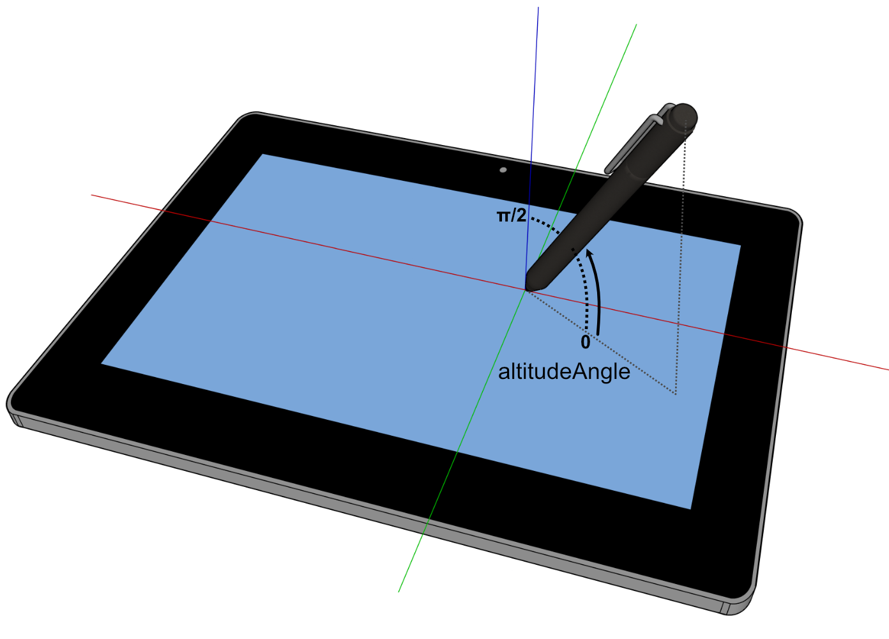
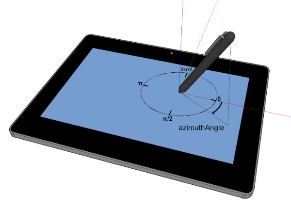
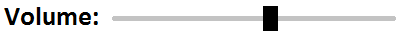
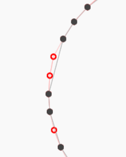
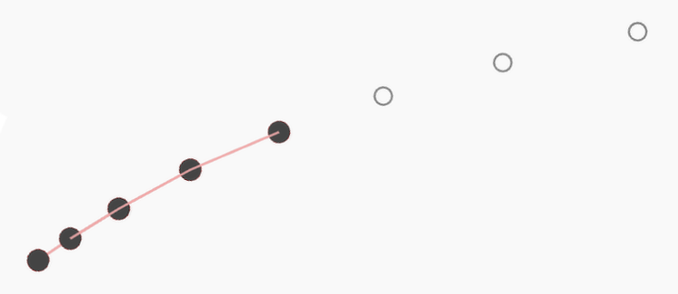

The Pointer Events specification defines a unified hardware-agnostic framework for handling input from various devices, including mice, touchscreens, and pens/styluses. By providing a single set of events (e.g., pointerdown, pointermove, pointerup), it allows developers to support diverse input methods without writing device-specific logic for each.
This specification also defines Mouse and Wheel Events, as well as a mapping to fire Mouse Events for other pointer device types.
This specification is an update to [[PointerEvents3]] specification. It also includes the Mouse and Wheel Events, previously in the [[UIEVENTS]] specification.
This revision includes new features:
persistentDeviceId to provide a stable identifier for input devices across multiple interactions.touch-action values: pan-left, pan-right, pan-up, pan-downToday, most [[HTML]] content is used with and/or designed for mouse input. Those that handle input in a custom manner typically code to [[UIEVENTS]] Mouse Events. Newer computing devices today, however, incorporate other forms of input, including touchscreens and pen input. Event types have been proposed for handling each of these forms of input individually. However, that approach often incurs unnecessary duplication of logic and event handling overhead when adding support for a new input type. This often creates a compatibility problem when content is written with only one device type in mind. Additionally, for compatibility with existing mouse-based content, most user agents fire Mouse Events for all input types. This makes it ambiguous whether a Mouse Event represents an actual mouse device or is being produced from another input type for compatibility, which makes it hard to code to both device types simultaneously.
To reduce the cost of coding to multiple input types and also to help with the above described ambiguity with Mouse Events, this specification defines a more abstract form of input, called a pointer. A pointer can be any point of contact on the screen made by a mouse cursor, pen, touch (including multi-touch), or other pointing input device. This model makes it easier to write sites and applications that work well no matter what hardware the user has. For scenarios when device-specific handling is desired, this specification also defines properties for inspecting the device type which produced the event. The primary goal is to provide a single set of events and interfaces that allow for easier authoring for cross-device pointer input while still allowing for device-specific handling only when necessary for an augmented experience.
An additional key goal is to enable multi-threaded user agents to handle direct manipulation actions for panning and zooming (for instance, with a finger or stylus on a touchscreen), without blocking on script execution.
While this specification defines a unified event model for a variety of pointer inputs, this model does not cover other forms of input such as keyboards or keyboard-like interfaces (for instance, a screen reader or similar assistive technology running on a touchscreen-only device, which allows users sequential navigation through focusable controls and elements). While user agents might choose to also generate pointer events in response to these interfaces, this scenario is not covered in this specification.
In the first instance, authors are encouraged to provide equivalent functionality for all forms of input by responding to high-level events such as [=HTMLElement/focus=], [=HTMLElement/blur=] and click. However, when using low-level events (such as Pointer Events), authors are encouraged to ensure that all types of input are supported. In the case of keyboards and keyboard-like interfaces, this might require the addition of explicit keyboard event handling. See Keyboard Accessible [[WCAG22]] for further details.

The events for handling generic pointer input look a lot like those for mouse: {{pointerdown}}, {{pointermove}}, {{pointerup}}, {{pointerover}}, {{pointerout}}, and so on. This facilitates easy content migration from Mouse Events to Pointer Events. Pointer Events provide all the usual properties present in Mouse Events (including client coordinates, target element, button states) in addition to new properties for other forms of input, such as pressure, contact geometry, tilt. Authors can easily code to Pointer Events to share logic between different input types where it makes sense, and customize for a particular type of input only where necessary to get the best experience.
While Pointer Events are sourced from a variety of input devices, they are not defined as being generated from some other set of device-specific events. While possible and encouraged for compatibility, this spec does not require other device-specific events be supported (such as mouse events or touch events). A user agent could support pointer events without supporting any other device events. For compatibility with content written to mouse-specific events, this specification does provide an optional section describing how to generate compatibility mouse events based on pointer input from devices other than a mouse.
This specification does not provide any advice on the expected behavior of user agents that support both Touch Events (as defined in [[TOUCH-EVENTS]]) and Pointer Events. For more information on the relationship between these two specifications, see the Touch Events Community Group.
The following are basic examples that demonstrate how some of the APIs in this specification might be used by authors. Further, more specific examples are provided in the relevant sections of this document.
/* Bind to either Pointer Events or traditional touch/mouse */
if (window.PointerEvent) {
// if Pointer Events are supported, only listen to pointer events
target.addEventListener("pointerdown", function(e) {
// if necessary, apply separate logic based on e.pointerType
// for different touch/pen/mouse behavior
...
});
...
} else {
// traditional touch/mouse event handlers
target.addEventListener('touchstart', function(e) {
// prevent compatibility mouse events and click
e.preventDefault();
...
});
...
target.addEventListener('mousedown', ...);
...
}
// additional event listeners for keyboard handling
...
window.addEventListener("pointerdown", detectInputType);
function detectInputType(event) {
switch(event.pointerType) {
case "mouse":
/* mouse input detected */
break;
case "pen":
/* pen/stylus input detected */
break;
case "touch":
/* touch input detected */
break;
default:
/* pointerType is empty (could not be detected)
or UA-specific custom type */
}
}
<div style="position:absolute; top:0px; left:0px; width:100px;height:100px;"></div>
<script>
window.addEventListener("pointerdown", checkPointerSize);
function checkPointerSize(event) {
event.target.style.width = event.width + "px";
event.target.style.height = event.height + "px";
}
</script>
const event1 = new PointerEvent("pointerover",
{ bubbles: true,
cancelable: true,
composed: true,
pointerId: 42,
pointerType: "pen",
clientX: 300,
clientY: 500
});
eventTarget.dispatchEvent(event1);
let pointerEventInitDict =
{
bubbles: true,
cancelable: true,
composed: true,
pointerId: 42,
pointerType: "pen",
clientX: 300,
clientY: 500,
};
const p1 = new PointerEvent("pointermove", pointerEventInitDict);
pointerEventInitDict.clientX += 10;
const p2 = new PointerEvent("pointermove", pointerEventInitDict);
pointerEventInitDict.coalescedEvents = [p1, p2];
const event2 = new PointerEvent("pointermove", pointerEventInitDict);
eventTarget.dispatchEvent(event2);
<div style="position:absolute; top:0px; left:0px; width:100px;height:100px;"></div>
<script>
window.addEventListener("pointerdown", assignPenColor);
window.addEventListener("pointermove", assignPenColor);
const colorMap = new Map();
function assignPenColor(event) {
const uniqueId = event.persistentDeviceId;
// Check if a unique Id exists.
if (uniqueId == 0) {
return;
}
// Check if a color has been assigned to the device.
if (map.has(uniqueId)) {
return;
}
// Assign a color to the device.
let newColor = getNewColor();
map.set(uniqueId, newColor);
return newColor;
}
function getNewColor() {
/* return some color value */
}
</script>
The mouse event module originates from the [[HTML401]] onclick, ondblclick, onmousedown, onmouseup, onmouseover, onmousemove, and onmouseout attributes. This event module is specifically designed for use with pointing input devices, such as a mouse or a trackball.
Introduced in DOM Level 2, modified in this specification.
The {{MouseEvent}} interface provides specific contextual information associated with Mouse events.
In the case of nested elements, mouse events are always targeted at the most deeply nested element.
Ancestors of the targeted element can use event bubbling to obtain notifications of mouse events which occur within their descendent elements.
To create an instance of the {{MouseEvent}} interface, use the {{MouseEvent}} constructor, passing an optional {{MouseEventInit}} dictionary.
When initializing {{MouseEvent}} objects using initMouseEvent, implementations can use the client coordinates {{MouseEvent/clientX}} and {{MouseEvent/clientY}} for calculation of other coordinates (such as target coordinates exposed by DOM Level 0 implementations or other proprietary attributes, e.g., pageX).
[Exposed=Window]
interface MouseEvent : UIEvent {
constructor(DOMString type, optional MouseEventInit eventInitDict = {});
readonly attribute long screenX;
readonly attribute long screenY;
readonly attribute long clientX;
readonly attribute long clientY;
readonly attribute long layerX;
readonly attribute long layerY;
readonly attribute boolean ctrlKey;
readonly attribute boolean shiftKey;
readonly attribute boolean altKey;
readonly attribute boolean metaKey;
readonly attribute short button;
readonly attribute unsigned short buttons;
readonly attribute EventTarget? relatedTarget;
boolean getModifierState(DOMString keyArg);
};
The horizontal coordinate at which the event occurred relative to the origin of the screen coordinate system.
The [=un-initialized value=] of this attribute MUST be 0.
The vertical coordinate at which the event occurred relative to the origin of the screen coordinate system.
The [=un-initialized value=] of this attribute MUST be 0.
The horizontal coordinate at which the event occurred relative to the viewport associated with the event.
The [=un-initialized value=] of this attribute MUST be 0.
The vertical coordinate at which the event occurred relative to the viewport associated with the event.
The [=un-initialized value=] of this attribute MUST be 0.
The horizontal offset from the nearest [=tree/ancestor=] element which is a [=stacking context=], is positioned, or paints in the positioned phase when painting a stacking context.
The [=un-initialized value=] of this attribute MUST be 0.
The vertical offset from the nearest [=tree/ancestor=] element which is a [=stacking context=], is positioned, or paints in the positioned phase when painting a stacking context.
The [=un-initialized value=] of this attribute MUST be 0.
Refer to the {{KeyboardEvent}}'s {{KeyboardEvent/ctrlKey}} attribute.
The [=un-initialized value=] of this attribute MUST be false.
Refer to the {{KeyboardEvent}}'s {{KeyboardEvent/shiftKey}} attribute.
The [=un-initialized value=] of this attribute MUST be false.
Refer to the {{KeyboardEvent}}'s {{KeyboardEvent/altKey}} attribute.
The [=un-initialized value=] of this attribute MUST be false.
Refer to the {{KeyboardEvent}}'s {{KeyboardEvent/metaKey}} attribute.
The [=un-initialized value=] of this attribute MUST be false.
During mouse events caused by the depression or release of a mouse button, {{MouseEvent/button}} MUST be used to indicate which pointer device button changed state.
The value of the {{MouseEvent/button}} attribute MUST be as follows:
0 MUST indicate the primary button of the device (in general, the left button or the only button on single-button devices, used to activate a user interface control or select text) or the un-initialized value.
1 MUST indicate the auxiliary button (in general, the middle button, often combined with a mouse wheel).
2 MUST indicate the secondary button (in general, the right button, often used to display a context menu).
3 MUST indicate the X1 (back) button.
4 MUST indicate the X2 (forward) button.
Some pointing devices provide or simulate more button states, and values higher than 2 or lower than 0 MAY be used to represent such buttons.
The value of {{MouseEvent/button}} is not updated for events not caused by the depression/release of a mouse button. In these scenarios, take care not to interpret the value 0 as the left button, but rather as the default value.
Some default actions related to events such as {{mousedown}} and {{mouseup}} depend on the specific mouse button in use.
The [=un-initialized value=] of this attribute MUST be 0.
During any mouse events, {{MouseEvent/buttons}} MUST be used to indicate which combination of mouse buttons are currently being pressed, expressed as a bitmask.
Though similarly named, the values for the {{MouseEvent/buttons}} attribute and the {{MouseEvent/button}} attribute are very different. The value of {{MouseEvent/button}} is assumed to be valid during {{mousedown}} / {{mouseup}} event handlers, whereas the {{MouseEvent/buttons}} attribute reflects the state of the mouse's buttons for any trusted {{MouseEvent}} object (while it is being dispatched), because it can represent the "no button currently active" state (0).
The value of the {{MouseEvent/buttons}} attribute MUST be as follows:
0 MUST indicate no button is currently active.
1 MUST indicate the primary button of the device (in general, the left button or the only button on single-button devices, used to activate a user interface control or select text).
2 MUST indicate the secondary button (in general, the right button, often used to display a context menu), if present.
4 MUST indicate the auxiliary button (in general, the middle button, often combined with a mouse wheel).
Some pointing devices provide or simulate more buttons. To represent such buttons, the value MUST be doubled for each successive button (in the binary series 8, 16, 32, ... ).
Because the sum of any set of button values is a unique number, a content author can use a bitwise operation to determine how many buttons are currently being pressed and which buttons they are, for an arbitrary number of mouse buttons on a device. For example, the value 3 indicates that the left and right button are currently both pressed, while the value 5 indicates that the left and middle button are currently both pressed.
Some default actions related to events such as {{mousedown}} and {{mouseup}} depend on the specific mouse button in use.
The [=un-initialized value=] of this attribute MUST be 0.
Used to identify a secondary {{EventTarget}} related to a UI event, depending on the type of event.
The [=un-initialized value=] of this attribute MUST be null.
Queries the state of a modifier using a key value.
Returns true if it is a modifier key and the modifier is activated, false otherwise.
dictionary MouseEventInit : EventModifierInit {
long screenX = 0;
long screenY = 0;
long clientX = 0;
long clientY = 0;
short button = 0;
unsigned short buttons = 0;
EventTarget? relatedTarget = null;
};
Initializes the {{MouseEvent/screenX}} attribute of the {{MouseEvent}} object to the desired horizontal relative position of the mouse pointer on the user's screen.
Initializing the event object to the given mouse position must not move the user's mouse pointer to the initialized position.
Initializes the {{MouseEvent/screenY}} attribute of the {{MouseEvent}} object to the desired vertical relative position of the mouse pointer on the user's screen.
Initializing the event object to the given mouse position must not move the user's mouse pointer to the initialized position.
Initializes the {{MouseEvent/clientX}} attribute of the {{MouseEvent}} object to the desired horizontal position of the mouse pointer relative to the client window of the user's browser.
Initializing the event object to the given mouse position must not move the user's mouse pointer to the initialized position.
Initializes the {{MouseEvent/clientY}} attribute of the {{MouseEvent}} object to the desired vertical position of the mouse pointer relative to the client window of the user's browser.
Initializing the event object to the given mouse position must not move the user's mouse pointer to the initialized position.
Initializes the {{MouseEvent/button}} attribute of the {{MouseEvent}} object to a number representing the desired state of the button(s) of the mouse.
The value 0 is used to represent the primary mouse button, 1 is used to represent the auxiliary/middle mouse button, and 2 to represent the right mouse button. Numbers greater than 2 are also possible, but are not specified in this document.
Initializes the {{MouseEvent/buttons}} attribute of the {{MouseEvent}} object to a number representing one or more of the button(s) of the mouse that are to be considered active.
The {{MouseEvent/buttons}} attribute is a bit-field. If a mask value of 1 is true when applied to the value of the bit field, then the primary mouse button is down. If a mask value of 2 is true when applied to the value of the bit field, then the right mouse button is down. If a mask value of 4 is true when applied to the value of the bit field, then the auxiliary/middle button is down.
In JavaScript, to initialize the {{MouseEvent/buttons}} attribute as if the right (2) and middlebutton (4) were being pressed simultaneously, the buttons value can be assigned as either:
{ buttons: 2 | 4 }
or:
{ buttons: 6 }
The {{MouseEvent/relatedTarget}} should be initialized to the element whose bounds the mouse pointer just left (in the case of a {{mouseover}} or {{mouseenter}} event) or the element whose bounds the mouse pointer is entering (in the case of a {{mouseout}} or {{mouseleave}} or [=focusout=] event). For other events, this value need not be assigned (and will default to null).
Implementations MUST maintain the current click count when generating mouse events. This MUST be a non-negative integer indicating the number of consecutive clicks of a pointing device button within a specific time. The delay after which the count resets is specific to the environment configuration.
The algorithms in this section assume that the native platform OS will provide the following:
For these events, the OS will be able to provide the following info:
This section needs to be revised.
Generally, when a constructor of an {{Event}} interface, or of an interface inherited from the {{Event}} interface, is invoked, the steps described in [[DOM]] should be followed. However the {{MouseEvent}} interfaces provide additional dictionary members for initializing the internal state of the {{Event}} object's key modifiers: specifically, the internal state queried for using the {{MouseEvent/getModifierState()}} methods. This section supplements the [[DOM]] steps for intializing a new {{MouseEvent}} object with these optional modifier states.
For the purposes of constructing a {{MouseEvent}}, or object derived from these objects using the algorithm below, all {{MouseEvent}}, and derived objects have internal key modifier state which can be set and retrieved using the key modifier names described in the Modifier Keys table in [[UIEvents-Key]].
The following steps supplement the algorithm defined for constructing events in [[DOM]]:
"modifier", then let the key modifier name be the dictionary member's name excluding the prefix "modifier", and set the {{Event}} object's [=internal key modifier state=] that matches the [=key modifier name=] to the corresponding value.
This section needs to be revised.
The UA must maintain the following values that are shared for the entire User Agent.
A mouse button bitmask that tracks the current state of the mouse buttons.
The UA must maintain the following values that are shared for the Window.
A last mouse element value (initially undefined) that keeps track of the last {{Element}} that we sent a MouseEvent to.
A last mouse DOM path value (initially empty) that contains a snapshot of the ancestors {{Element}}s of the last mouse element when the most recent mouse event was sent.
This section needs to be revised.
A {{MouseEvent}} has the following internal flags that are used to track the state of various modifier keys: shift flag, control flag, alt flag, altgraph flag, and meta flag. These flags are set if the corresponding modifier key was pressed at the time of the mouse event.
This section needs to be revised.
To account for inert or disabled elements. this should call {{Document/elementsFromPoint()}} and reject invalid elements.
This section needs to be revised.
To initialize a MouseEvent with |event|, |eventType| and |eventTarget|, |bubbles|, and |cancelable|, run the following steps:
We should provide a hook for PointerLock instead of hardcoding it here.
This section needs to be revised.
This section needs to be revised.
This section needs to be revised.
This section needs to be revised.
This will return a button ID suitable for storing in the {{MouseEvent}}'s {{MouseEvent/button}} attribute.
This section needs to be revised.
TODO.
This section needs to be revised.
Other buttons can be added starting with 0x08 .
This section needs to be revised.
Other mouse events can occur between the mousedown and mouseup.
This section needs to be revised.
The platform should call this immediately after handle native mouse up for mouseups that generate clicks.
This section needs to be revised.
See pointerevents/100 for info about browsers using PointerEvents and rounded coordinates.
Any "default action" is handled during dispatch by triggering the activation behavior algorithm for the target. So there is no need for handle that here. However, need to verify that the existing spec handles disabled/css-pointer-events/inert/...
To handle `HTMLelement.click()`, call this algorithm with |native| = null and |target| = `HTMLelement`.
To handle keyboard-initiated clicks, call this algorithm with |native| = null and |target| = currently focused element.
This section needs to be revised.
This should be called immediately after handle native mouse click for mouse clicks that generate double clicks.
This section needs to be revised.
This algorithm makes assumptions about the dispatch of PointerEvents because they are not currently specified explicitly. Once pointerevents/285 is resolved this may need to be updated.
TODO: Set |mouseout| attributes from |native|. +CSSOM attributes.
Verify behavior when canceled (appears to have no effect).
Handle case where |element| has been deleted. Also case where it has been moved: Should the DOM mutation have triggered a mouseleave event? Should we sent it now? Should it be dropped? Need to verify what current browsers do.
Check compat: Value of event.composed. Spec says false. Chrome/Linux = true. Firefox/Linux = false.
TODO: Set |mouseout| attributes from |native|. +CSSOM attributes.
Need to verify behavior when canceled (appears to have no effect).
Handle case where |element| has been deleted or moved.
Check compat: Value of event.composed. Spec says false. Chrome/Linux = true. Firefox/Linux = false.
Check compat for shadow DOM elements. Chrome/Linux fires this event at the element and the shadow root.
This section needs to be revised.
To handle a context menu triggered by the keyboard, call this algorithm with |native| = null and |target| = currently focused element.
Certain mouse events defined in this specification MUST occur in a set order relative to one another. The following shows the event sequence that MUST occur when a pointing device's cursor is moved over an element:
| # | Event Type | Element | Notes |
|---|---|---|---|
| 1 | {{mousemove}} | ||
| Pointing device is moved into element A... | |||
| 2 | {{mouseover}} | A | |
| 3 | {{mouseenter}} | A | |
| 4 | {{mousemove}} | A | Multiple {{mousemove}} events |
| Pointing device is moved out of element A... | |||
| 5 | {{mouseout}} | A | |
| 6 | {{mouseleave}} | A |
When a pointing device is moved into an element A, and then into a nested element B and then back out again, the following sequence of events MUST occur:
| Event Type | Element | Notes | |
|---|---|---|---|
| 1 | {{mousemove}} | ||
| Pointing device is moved into element A... | |||
| 2 | {{mouseover}} | A | |
| 3 | {{mouseenter}} | A | |
| 4 | {{mousemove}} | A | Multiple {{mousemove}} events |
| Pointing device is moved into nested element B... | |||
| 5 | {{mouseout}} | A | |
| 6 | {{mouseover}} | B | |
| 7 | {{mouseenter}} | B | |
| 8 | {{mousemove}} | B | Multiple {{mousemove}} events |
| Pointing device is moved from element B into A... | |||
| 9 | {{mouseout}} | B | |
| 10 | {{mouseleave}} | B | |
| 11 | {{mouseover}} | A | |
| 12 | {{mousemove}} | A | Multiple {{mousemove}} events |
| Pointing device is moved out of element A... | |||
| 13 | {{mouseout}} | A | |
| 14 | {{mouseleave}} | A |
Sometimes elements can be visually overlapped using CSS. In the following example, three elements labeled A, B, and C all have the same dimensions and absolute position on a web page. Element C is a child of B, and B is a child of A in the DOM:

When the pointing device is moved from outside the element stack to the element labeled C and then moved out again, the following series of events MUST occur:
| Event Type | Element | Notes | |
|---|---|---|---|
| 1 | {{mousemove}} | ||
| Pointing device is moved into element C, the topmost element in the stack | |||
| 2 | {{mouseover}} | C | |
| 3 | {{mouseenter}} | A | |
| 4 | {{mouseenter}} | B | |
| 5 | {{mouseenter}} | C | |
| 6 | {{mousemove}} | C | Multiple {{mousemove}} events |
| Pointing device is moved out of element C... | |||
| 7 | {{mouseout}} | C | |
| 8 | {{mouseleave}} | C | |
| 9 | {{mouseleave}} | B | |
| 10 | {{mouseleave}} | A |
The {{mouseover}}/{{mouseout}} events are only fired once, while {{mouseenter}}/{{mouseleave}} events are fired three times (once to each element).
The following is the typical sequence of events when a button associated with a pointing device (e.g., a mouse button or trackpad) is pressed and released over an element:
| Event Type | Notes | |
|---|---|---|
| 1 | {{mousedown}} | |
| 2 | {{mousemove}} | OPTIONAL, multiple events, some limits |
| 3 | {{mouseup}} | |
| 4 | {{click}} | |
| 5 | {{mousemove}} | OPTIONAL, multiple events, some limits |
| 6 | {{mousedown}} | |
| 7 | {{mousemove}} | OPTIONAL, multiple events, some limits |
| 8 | {{mouseup}} | |
| 9 | {{click}} | |
| 10 | {{dblclick}} |
The lag time, degree, distance, and number of {{mousemove}} events allowed between the {{mousedown}} and {{mouseup}} events while still firing a {{click}} or {{dblclick}} event will be implementation-, device-, and platform-specific. This tolerance can aid users that have physical disabilities like unsteady hands when these users interact with a pointing device.
Each implementation will determine the appropriate hysteresis tolerance, but in general SHOULD fire {{click}} and {{dblclick}} events when the event target of the associated {{mousedown}} and {{mouseup}} events is the same element with no {{mouseout}} or {{mouseleave}} events intervening, and SHOULD fire {{click}} and {{dblclick}} events on the nearest common inclusive ancestor when the associated {{mousedown}} and {{mouseup}} event targets are different.
If a {{mousedown}} event was targeted at an HTML document's body element, and the corresponding {{mouseup}} event was targeted at the document element, then the {{click}} event will be dispatched to the document element, since it is the nearest common inclusive ancestor.
If the [=Event/target=] (e.g. the target element) is removed from the DOM during the mouse events sequence, the remaining events of the sequence MUST NOT be fired on that element.
If the target element is removed from the DOM as the result of a {{mousedown}} event, no events for that element will be dispatched for {{mouseup}}, {{click}}, or {{dblclick}}, nor any default activation events. However, the {{mouseup}} event will still be dispatched on the element that is exposed to the mouse after the removal of the initial target element. Similarly, if the target element is removed from the DOM during the dispatch of a {{mouseup}} event, the {{click}} and subsequent events will not be dispatched.
| Type | auxclick
|
|---|---|
| Interface | {{PointerEvent}} |
| Sync / Async | Sync |
| Bubbles | Yes |
| Trusted Targets | Element |
| Cancelable | Yes |
| Composed | Yes |
| Default action | Varies |
| Context (trusted events) |
|
The {{auxclick}} event type MUST be dispatched on the topmost event target indicated by the pointer, when the user presses down and releases the non-primary pointer button, or otherwise activates the pointer in a manner that simulates such an action. The actuation method of the mouse button depends upon the pointer device and the environment configuration, e.g., it MAY depend on the screen location or the delay between the press and release of the pointing device button.
The {{auxclick}} event should only be fired for the non-primary pointer
buttons (i.e., when {{MouseEvent/button}} value is not 0,
{{MouseEvent/buttons}} value is greater than 1). The primary button
(like the left button on a standard mouse) MUST NOT fire
{{auxclick}} events. See {{click}} for a corresponding event that
is associated with the primary button.
The {{auxclick}} event MAY be preceded by the {{mousedown}} and {{mouseup}} events on the same element, disregarding changes between other node types (e.g., text nodes). Depending upon the environment configuration, the {{auxclick}} event MAY be dispatched if one or more of the event types {{mouseover}}, {{mousemove}}, and {{mouseout}} occur between the press and release of the pointing device button.
The default action of the {{auxclick}} event type varies based on the [=Event/target=] of the event and the value of the {{MouseEvent/button}} or {{MouseEvent/buttons}} attributes. Typical default actions of the {{auxclick}} event type are as follows:
myLink.addEventListener("auxclick", function(e) {
if (e.button === 1) {
// This would prevent the default behavior which is for example
// opening a new tab when middle clicking on a link.
e.preventDefault();
// Do something else to handle middle button click like taking
// care of opening link or non-link buttons in new tabs in a way
// that fits the app. Other actions like closing a tab in a tab-strip
// which should be done on the click action can be done here too.
}
});
In the case of right button, the {{auxclick}} event is dispatched after any {{contextmenu}} event. Note that some user agents swallow all input events while a context menu is being displayed, so auxclick may not be available to applications in such scenarios. See for more clarification.
myDiv.addEventListener("contextmenu", function(e) {
// This call makes sure no context menu is shown
// to interfere with page receiving the events.
e.preventDefault();
});
myDiv.addEventListener("auxclick", function(e) {
if (e.button === 2) {
// Do something else to handle right button click like opening a
// customized context menu inside the app.
}
});
| Type | click
|
|---|---|
| Interface | {{PointerEvent}} |
| Sync / Async | Sync |
| Bubbles | Yes |
| Trusted Targets | Element |
| Cancelable | Yes |
| Composed | Yes |
| Default action | Varies |
| Context (trusted events) |
|
The {{click}} event type MUST be dispatched on the topmost event target indicated by the pointer, when the user presses down and releases the primary pointer button, or otherwise activates the pointer in a manner that simulates such an action. The actuation method of the mouse button depends upon the pointer device and the environment configuration, e.g., it MAY depend on the screen location or the delay between the press and release of the pointing device button.
The {{click}} event should only be fired for the primary pointer
button (i.e., when {{MouseEvent/button}} value is 0,
{{MouseEvent/buttons}} value is 1). Secondary buttons
(like the middle or right button on a standard mouse) MUST NOT fire
{{click}} events. See {{auxclick}} for a corresponding event that
is associated with the non-primary buttons.
The {{click}} event MAY be preceded by the {{mousedown}} and {{mouseup}} events on the same element, disregarding changes between other node types (e.g., text nodes). Depending upon the environment configuration, the {{click}} event MAY be dispatched if one or more of the event types {{mouseover}}, {{mousemove}}, and {{mouseout}} occur between the press and release of the pointing device button. The {{click}} event MAY also be followed by the {{dblclick}} event.
If a user mouses down on a text node child of a
<p> element which has been styled with a large
line-height, shifts the mouse slightly such that it is no longer
over an area containing text but is still within the containing
block of that <p> element (i.e., the pointer is
between lines of the same text block, but not over the text node per
se), then subsequently mouses up, this will likely still trigger a
{{click}} event (if it falls within the normal temporal
hysteresis for a {{click}}), since the user has stayed
within the scope of the same element. Note that user-agent-generated
mouse events are not dispatched on text nodes.
In addition to being associated with pointer devices, the {{click}} event type MUST be dispatched as part of an element activation.
For maximum accessibility, content authors are encouraged to use the {{click}} event type when defining activation behavior for custom controls, rather than other pointing-device event types such as {{mousedown}} or {{mouseup}}, which are more device-specific. Though the {{click}} event type has its origins in pointer devices (e.g., a mouse), subsequent implementation enhancements have extended it beyond that association, and it can be considered a device-independent event type for element activation.
The default action of the {{click}} event type varies based on the [=Event/target=] of the event and the value of the {{MouseEvent/button}} or {{MouseEvent/buttons}} attributes. Typical default actions of the {{click}} event type are as follows:
| Type | contextmenu |
|---|---|
| Interface | {{PointerEvent}} |
| Sync / Async | Sync |
| Bubbles | Yes |
| Trusted Targets | Element |
| Cancelable | Yes |
| Composed | Yes |
| Default action | Invoke a context menu if supported. |
| Context (trusted events) |
|
A user agent MUST dispatch this event before invoking a context menu.
When the {{contextmenu}} event is triggered by right mouse button, the {{contextmenu}} event MUST be dispatched after the {{mousedown}} event.
Depending on the platform, the {{contextmenu}} event may be dispatched before or after the {{mouseup}} event.
| Type | dblclick |
|---|---|
| Interface | {{MouseEvent}} |
| Sync / Async | Sync |
| Bubbles | Yes |
| Trusted Targets | Element |
| Cancelable | Yes |
| Composed | Yes |
| Default action | None |
| Context (trusted events) |
|
A user agent MUST dispatch this event when the primary button of a pointing device is clicked twice over an element. The definition of a double click depends on the environment configuration, except that the event target MUST be the same between {{mousedown}}, {{mouseup}}, and {{dblclick}}. This event type MUST be dispatched after the event type {{click}} if a click and double click occur simultaneously, and after the event type {{mouseup}} otherwise.
As with the {{click}} event, the {{dblclick}} event should only be fired for the primary pointer button. Secondary buttons MUST NOT fire {{dblclick}} events.
Canceling the {{click}} event does not affect the firing of a {{dblclick}} event.
As with the {{click}} event type, the default action of the {{dblclick}} event type varies based on the [=Event/target=] of the event and the value of the {{MouseEvent/button}} or {{MouseEvent/buttons}} attributes. The typical default actions of the {{dblclick}} event type match those of the {{click}} event type.| Type | mousedown
|
|---|---|
| Interface | {{MouseEvent}} |
| Sync / Async | Sync |
| Bubbles | Yes |
| Trusted Targets | Element |
| Cancelable | Yes |
| Composed | Yes |
| Default action | Varies: Start a drag/drop operation; start a text selection; start a scroll/pan interaction (in combination with the middle mouse button, if supported) |
| Context (trusted events) |
|
Many implementations use the {{mousedown}} event to begin a variety of contextually dependent default actions. These default actions can be prevented if this event is canceled. Some of these default actions could include: beginning a drag/drop interaction with an image or link, starting text selection, etc. Additionally, some implementations provide a mouse-driven panning feature that is activated when the middle mouse button is pressed at the time the {{mousedown}} event is dispatched.
| Type | mouseenter
|
|---|---|
| Interface | {{MouseEvent}} |
| Sync / Async | Sync |
| Bubbles | No |
| Trusted Targets | Element |
| Cancelable | No |
| Composed | No |
| Default action | None |
| Context (trusted events) |
|
There are similarities between this event type and the CSS
:hover pseudo-class [[CSS2]].
See also the {{mouseleave}} event type.
| Type | mouseleave
|
|---|---|
| Interface | {{MouseEvent}} |
| Sync / Async | Sync |
| Bubbles | No |
| Trusted Targets | Element |
| Cancelable | No |
| Composed | No |
| Default action | None |
| Context (trusted events) |
|
There are similarities between this event type and the CSS
:hover pseudo-class [[CSS2]].
See also the {{mouseenter}} event type.
| Type | mousemove
|
|---|---|
| Interface | {{MouseEvent}} |
| Sync / Async | Sync |
| Bubbles | Yes |
| Trusted Targets | Element |
| Cancelable | Yes |
| Composed | Yes |
| Default action | None |
| Context (trusted events) |
|
In some implementation environments, such as a browser, {{mousemove}} events can continue to fire if the user began a drag operation (e.g., a mouse button is pressed) and the pointing device has left the boundary of the user agent.
This event was formerly specified to be non-cancelable in DOM Level 2 Events, but was changed to reflect existing interoperability between user agents.
| Type | mouseout
|
|---|---|
| Interface | {{MouseEvent}} |
| Sync / Async | Sync |
| Bubbles | Yes |
| Trusted Targets | Element |
| Cancelable | Yes |
| Composed | Yes |
| Default action | None |
| Context (trusted events) |
|
See also the {{mouseover}} event type.
| Type | mouseover
|
|---|---|
| Interface | {{MouseEvent}} |
| Sync / Async | Sync |
| Bubbles | Yes |
| Trusted Targets | Element |
| Cancelable | Yes |
| Composed | Yes |
| Default action | None |
| Context (trusted events) |
|
See also the {{mouseout}} event type.
| Type | mouseup
|
|---|---|
| Interface | {{MouseEvent}} |
| Sync / Async | Sync |
| Bubbles | Yes |
| Trusted Targets | Element |
| Cancelable | Yes |
| Composed | Yes |
| Default action | None |
| Context (trusted events) |
|
In some implementation environments, such as a browser, a {{mouseup}} event can be dispatched even if the pointing device has left the boundary of the user agent, e.g., if the user began a drag operation with a mouse button pressed.
PointerEvent interface
dictionary PointerEventInit : MouseEventInit {
long pointerId = 0;
double width = 1;
double height = 1;
float pressure = 0;
float tangentialPressure = 0;
long tiltX;
long tiltY;
long twist = 0;
double altitudeAngle;
double azimuthAngle;
DOMString pointerType = "";
boolean isPrimary = false;
long persistentDeviceId = 0;
sequence<PointerEvent> coalescedEvents = [];
sequence<PointerEvent> predictedEvents = [];
};
[Exposed=Window]
interface PointerEvent : MouseEvent {
constructor(DOMString type, optional PointerEventInit eventInitDict = {});
readonly attribute long pointerId;
readonly attribute double width;
readonly attribute double height;
readonly attribute float pressure;
readonly attribute float tangentialPressure;
readonly attribute long tiltX;
readonly attribute long tiltY;
readonly attribute long twist;
readonly attribute double altitudeAngle;
readonly attribute double azimuthAngle;
readonly attribute DOMString pointerType;
readonly attribute boolean isPrimary;
readonly attribute long persistentDeviceId;
[SecureContext] sequence<PointerEvent> getCoalescedEvents();
sequence<PointerEvent> getPredictedEvents();
};
A unique identifier for the pointer causing the event. user agents MAY reserve a generic {{pointerId}} value of 0 or 1 for the primary mouse pointer. The {{pointerId}} value of -1 MUST be reserved and used to indicate events that were generated by something other than a pointing device. For any other pointers, user agents are free to implement different strategies and approaches in how they assign a {{pointerId}} value. However, all active pointers in the [=top-level browsing context=] (as defined by [[HTML]]) must be unique, and the identifier MUST NOT be influenced by any other top-level browsing context (i.e. one top-level browsing context cannot assume that the {{pointerId}} of a pointer will be the same when the pointer moves outside of the browsing context and into another top-level browsing context).
The user agent MAY recycle previously retired values for {{pointerId}} from previous active pointers, or it MAY always reuse the same {{pointerId}} for a particular pointing device (for instance, to uniquely identify particular pen/stylus inputs from a specific user in a multi-user collaborative application). However, in the latter case, to minimize the chance of fingerprinting and tracking across different pages or domains, the {{pointerId}} MUST only be associated explicitly with that particular pointing device for the lifetime of the page / session, and a new randomized {{pointerId}} MUST be chosen the next time that particular pointing device is used again in a new session.
The {{pointerId}} selection algorithm is implementation specific. Authors cannot assume values convey any particular meaning other than an identifier for the pointer that is unique from all other active pointers. As an example, user agents may simply assign a number, starting from 0, to any active pointers, in the order that they become active — but these values are not guaranteed to be monotonically increasing. As the reuse of the same {{pointerId}} for a particular pointing device is left up to individual implementations, authors are strongly discouraged from relying on it, and to refer to {{persistentDeviceId}} instead.
The width (magnitude on the X axis), in CSS pixels (see [[CSS21]]), of the contact geometry of the pointer. This value MAY be updated on each event for a given pointer. For inputs that typically lack contact geometry (such as a traditional mouse), and in cases where the actual geometry of the input is not detected by the hardware, the user agent MUST return a default value of 1.
The height (magnitude on the Y axis), in CSS pixels (see [[CSS21]]), of the contact geometry of the pointer. This value MAY be updated on each event for a given pointer. For inputs that typically lack contact geometry (such as a traditional mouse), and in cases where the actual geometry of the input is not detected by the hardware, the user agent MUST return a default value of 1.
The normalized pressure of the pointer input in the range of [0,1], where 0 and 1 represent the minimum and maximum pressure the hardware is capable of detecting, respectively. For hardware and platforms that do not support pressure, the value MUST be 0.5 when in the active buttons state and 0 otherwise.
The normalized tangential pressure (also known as barrel pressure), typically set by an additional control (e.g. a finger wheel on an airbrush stylus), of the pointer input in the range of [-1,1], where 0 is the neutral position of the control. Note that some hardware may only support positive values in the range of [0,1]. For hardware and platforms that do not support tangential pressure, the value MUST be 0.
The plane angle (in degrees, in the range of [-90,90]) between the Y-Z plane and the plane containing both the transducer (e.g. pen/stylus) axis and the Y axis. A positive tiltX is to the right, in the direction of increasing X values. tiltX can be used along with tiltY to represent the tilt away from the normal of a transducer with the digitizer. For hardware and platforms that do not report tilt or angle, the value MUST be 0.

tiltX.The plane angle (in degrees, in the range of [-90,90]) between the X-Z plane and the plane containing both the transducer (e.g. pen/stylus) axis and the X axis. A positive tiltY is towards the user, in the direction of increasing Y values. tiltY can be used along with tiltX to represent the tilt away from the normal of a transducer with the digitizer. For hardware and platforms that do not report tilt or angle, the value MUST be 0.

tiltY.The clockwise rotation (in degrees, in the range of [0,359]) of a transducer (e.g. pen/stylus) around its own major axis. For hardware and platforms that do not report twist, the value MUST be 0.
The altitude (in radians) of the transducer (e.g. pen/stylus), in the range [0,π/2] — where 0 is parallel to the surface (X-Y plane), and π/2 is perpendicular to the surface. For hardware and platforms that do not report tilt or angle, the value MUST be π/2.
altitudeAngle is π/2,
which positions the transducer as being perpendicular to the surface.
This differs from the Touch Events - Level 2 specification's
definition for the altitudeAngle property, which has a default value of 0.

altitudeAngle of π/4 (45 degrees from the X-Y plane).The azimuth angle (in radians) of the transducer (e.g. pen/stylus), in the range [0, 2π] — where 0 represents a transducer whose cap is pointing in the direction of increasing X values (point to "3 o'clock" if looking straight down) on the X-Y plane, and the values progressively increase when going clockwise (π/2 at "6 o'clock", π at "9 o'clock", 3π/2 at "12 o'clock"). When the transducer is perfectly perpendicular to the surface (altitudeAngle of π/2), the value MUST be 0. For hardware and platforms that do not report tilt or angle, the value MUST be 0.

azimuthAngle of π/6 ("4 o'clock").Indicates the device type that caused the event (such as mouse, pen, touch). If the user agent is to fire a pointer event for a mouse, pen/stylus, or touch input device, then the value of pointerType MUST be according to the following table:
| Pointer Device Type | pointerType Value |
|---|---|
| Mouse | mouse |
| Pen / stylus | pen |
| Touch contact | touch |
If the device type cannot be detected by the user agent, then the value MUST be an empty string. If the user agent supports pointer device types other than those listed above, the value of pointerType SHOULD be vendor prefixed to avoid conflicting names for different types of devices. Future specifications MAY provide additional normative values for other device types.
pointerType can be used. Also note that developers should include some form of default handling to cover user agents that may have implemented their own custom pointerType values and for situations where pointerType is simply an empty string.Indicates if the pointer represents the primary pointer of this pointer type.
A unique identifier for the pointing device. If the hardware supports multiple pointers, pointer events generated from pointing devices MUST only get a persistentDeviceId if those pointers are uniquely identifiable over the session. If the pointer is uniquely identifiable, the assigned persistentDeviceId to that pointing device will remain constant for the remainder of the session. The persistentDeviceId value of 0 MUST be reserved and used to indicate events whose generating device could not be identified. Like pointerId, to minimize the chance of fingerprinting and tracking across different pages or domains, the persistentDeviceId MUST only be associated explicitly with that particular pointing device for the lifetime of the page / session, and a new randomized persistentDeviceId MUST be chosen the next time that particular pointing device is used again in a new session.
persistentDeviceId is not guaranteed to be available for all pointer events from a pointing device. For example, the device may not report its hardware id to the digitizer in time for pointerdown to have a persistentDeviceId. In such a case, the persistentDeviceId may initially be 0 and change to a valid value.A method that returns the list of coalesced events.
A method that returns the list of predicted events.
The PointerEventInit dictionary is used by the {{PointerEvent}} interface's constructor to provide a mechanism by which to construct untrusted (synthetic) pointer events. It inherits from the {{MouseEventInit}} dictionary defined in [[UIEVENTS]]. See the examples for sample code demonstrating how to fire an untrusted pointer event.
The [=event constructing steps=] for PointerEvent clones {{PointerEventInit}}'s {{PointerEventInit/coalescedEvents}} to coalesced events list and clones {{PointerEventInit}}'s {{PointerEventInit/predictedEvents}} to predicted events list.
PointerEvent interface inherits from {{MouseEvent}}, defined in [[[UIEVENTS]]].
Also note the proposed extension in [[[CSSOM-VIEW]]], which changes the various coordinate properties from long
to double to allow for fractional coordinates. For user agents that already implement this proposed extension for
{{PointerEvent}}, but not for regular {{MouseEvent}}, there are additional requirements when it comes to
the click, auxclick, and contextmenu events.Some pointer devices, such as mouse or pen, support multiple buttons. In the [[UIEVENTS]] Mouse Event model, each button press produces a mousedown and mouseup event. To better abstract this hardware difference and simplify cross-device input authoring, Pointer Events do not fire overlapping {{pointerdown}} and {{pointerup}} events for chorded button presses (depressing an additional button while another button on the pointer device is already depressed).
Instead, chorded button presses can be detected by inspecting changes to the button and buttons properties. The button and buttons properties are inherited from the {{MouseEvent}} interface, but with a change in semantics and values, as outlined in the following sections.
The modifications to the button and buttons properties apply only to pointer events. However for click, auxclick and contextmenu the value of button and buttons MUST follow [[UIEVENTS]], as is the case for compatibility mouse events .
button propertyTo identify button state transitions in any pointer event (and not just {{pointerdown}} and {{pointerup}}), the button property indicates the device button whose state change fired the event.
| Device Button Changes | button |
|---|---|
| Neither buttons nor touch/pen contact changed since last event | -1 |
| Left Mouse, Touch contact, Pen contact | 0 |
| Middle Mouse | 1 |
| Right Mouse, Pen barrel button | 2 |
| X1 (back) Mouse | 3 |
| X2 (forward) Mouse | 4 |
| Pen eraser button | 5 |
button property in a {{pointermove}} event will be different from that in a mousemove event. For example, while moving the mouse with the right button pressed, the {{pointermove}} events will have the button value -1, but the mousemove events will have the button value 2.buttons propertyThe buttons property gives the current state of the device buttons as a bitmask (same as in MouseEvent, but with an expanded set of possible values).
| Current state of device buttons | buttons |
|---|---|
| Mouse moved with no buttons pressed, Pen moved while hovering with no buttons pressed | 0 |
| Left Mouse, Touch contact, Pen contact | 1 |
| Middle Mouse | 4 |
| Right Mouse, Pen barrel button | 2 |
| X1 (back) Mouse | 8 |
| X2 (forward) Mouse | 16 |
| Pen eraser button | 32 |
In a multi-pointer (e.g. multi-touch) scenario, the isPrimary property is used to identify a master pointer amongst the set of active pointers for each pointer type.
pointerType) are considered primary. For example, a touch contact and a mouse cursor moved simultaneously will produce pointers that are both considered primary.false for isPrimary.PointerEvent interfaceTo fire a pointer event named |e| means to [=fire an event=] named |e| using PointerEvent whose attributes are set as defined in {{PointerEvent}} Interface and Attributes and Default Actions.
If the event is not a {{gotpointercapture}}, {{lostpointercapture}}, click, auxclick or contextmenu event, run the process pending pointer capture steps for this PointerEvent.
Determine the target at which the event is fired as follows:
Let |targetDocument| be target's [=Node/node document=] [[DOM]].
If the event is {{pointerdown}}, {{pointermove}}, or {{pointerup}}, set active document for the event's {{PointerEvent/pointerId}} to |targetDocument|.
If the event is {{pointerdown}}, the associated device is a direct manipulation device, and the target is an {{Element}}, then set pointer capture for this {{PointerEvent/pointerId}} to the target element as described in implicit pointer capture.
Before firing this event, the user agent SHOULD treat the target as if the pointing device has moved over it from the |previousTarget| for the purpose of ensuring event ordering [[UIEVENTS]]. If the |needsOverEvent| flag is set, a {{pointerover}} event is needed even if the target element is the same.
Fire the event to the determined target.
Save the determined target as the |previousTarget| for the given pointer,
and reset the |needsOverEvent| flag to false.
If the |previousTarget| at any point will no longer be [=connected=] [[DOM]],
update the |previousTarget| to the nearest still [=connected=] [[DOM]] parent
following the event path corresponding to dispatching events to the |previousTarget|,
and set the |needsOverEvent| flag to true.
The bubbles and cancelable properties and the default actions for the event types defined in this specification appear in the following table. Details of each of these event types are provided in Pointer Event types.
| Event Type | Bubbles | Cancelable | Default Action |
|---|---|---|---|
| {{pointerover}} | Yes | Yes | None |
| {{pointerenter}} | No | No | None |
| {{pointerdown}} | Yes | Yes | Varies: when the pointer is primary, all default actions of the mousedown event
Canceling this event also prevents subsequent firing of compatibility mouse events. |
| {{pointermove}} | Yes | Yes | Varies: when the pointer is primary, all default actions of mousemove |
| {{pointerrawupdate}} | Yes | No | None |
| {{pointerup}} | Yes | Yes | Varies: when the pointer is primary, all default actions of mouseup |
| {{pointercancel}} | Yes | No | None |
| {{pointerout}} | Yes | Yes | None |
| {{pointerleave}} | No | No | None |
| {{gotpointercapture}} | Yes | No | None |
| {{lostpointercapture}} | Yes | No | None |
Viewport manipulations (panning and zooming) — generally, as a result of a direct manipulation interaction — are intentionally NOT a default action of pointer events, meaning that these behaviors (e.g. panning a page as a result of moving a finger on a touchscreen) cannot be suppressed by canceling a pointer event. Authors must instead use touch-action to explicitly declare the direct manipulation behavior for a region of the document. Removing this dependency on the cancelation of events facilitates performance optimizations by the user agent.
For {{pointerenter}} and {{pointerleave}} events, the {{EventInit/composed}} [[DOM]] attribute SHOULD be false; for all other pointer events in the table above, the attribute SHOULD be true.
For all pointer events in the table above, the {{UIEvent/detail}} [[UIEVENTS]] attribute SHOULD be 0.
fromElement and toElement in MouseEvents to support legacy content. We encourage those user agents to set the values of those (inherited) attributes in PointerEvents to null to transition authors to the use of standardized alternates (target and relatedTarget).Similar to MouseEvent {{MouseEventInit/relatedTarget}}, the relatedTarget should be initialized to the element whose bounds the pointer just left (in the case of a {{pointerover}} or pointerenter event) or the element whose bounds the pointer is entering (in the case of a {{pointerout}} or {{pointerleave}}). For other pointer events, this value will default to null. Note that when an element receives the pointer capture all the following events for that pointer are considered to be inside the boundary of the capturing element.
For {{gotpointercapture}} and {{lostpointercapture}} events, all the attributes except the ones defined in the table above should be the same as the Pointer Event that caused the user agent to run the process pending pointer capture steps and fire the {{gotpointercapture}} and {{lostpointercapture}} events.
The user agent MUST run the following steps when implicitly releasing pointer capture as well as when firing Pointer Events that are not {{gotpointercapture}} or {{lostpointercapture}}.
As defined in the section for click, auxclick, and contextmenu events, even after the {{lostpointercapture}} event has been dispatched,
the corresponding click, auxclick or contextmenu event, if any, would still be dispatched to the capturing target.
The user agent MUST suppress a pointer event stream when it detects that the web page is unlikely to continue to receive pointer events with a specific {{PointerEvent/pointerId}}. Any of the following scenarios satisfy this condition (there MAY be additional scenarios):
Other scenarios in which the user agent MAY suppress a pointer event stream include:
Methods for detecting any of these scenarios are out of scope for this specification.
The user agent MUST run the following steps to suppress a pointer event stream:
A pointing device that moved relative to the screen surface or underwent some change in any of its properties fires various events as defined in Pointer Event types. For a stationary pointing device (that neither moved relative to the screen surface nor underwent any change in any properties), the user agent MUST fire certain boundary events after a layout change that affected the hit test target for the pointer, see {{pointerover}}, {{pointerenter}}, {{pointerout}} and {{pointerleave}} for details. The user agent MAY delay the firing of these boundary events because of performance reasons (e.g. to avoid too many hit-tests or layout changes caused by boundary event listeners).
tiltX / tiltY and altitudeAngle / azimuthAnglePointer Events include two complementary sets of attributes to express the orientation of a transducer relative to the X-Y plane: tiltX / tiltY (introduced in the original Pointer Events specification), and azimuthAngle / altitudeAngle (adopted from the Touch Events - Level 2 specification).
Depending on the specific hardware and platform, user agents will likely only receive one set of values for the transducer orientation relative to the screen plane — either tiltX / tiltY or altitudeAngle / azimuthAngle. User agents MUST use the following algorithm for converting these values.
When the user agent calculates tiltX / tiltY from azimuthAngle / altitudeAngle it SHOULD round the final integer values using Math.round [[ECMASCRIPT]] rules.
/* Converting between tiltX/tiltY and altitudeAngle/azimuthAngle */
function spherical2tilt(altitudeAngle, azimuthAngle) {
const radToDeg = 180/Math.PI;
let tiltXrad = 0;
let tiltYrad = 0;
if (altitudeAngle == 0) {
// the pen is in the X-Y plane
if (azimuthAngle == 0 || azimuthAngle == 2*Math.PI) {
// pen is on positive X axis
tiltXrad = Math.PI/2;
}
if (azimuthAngle == Math.PI/2) {
// pen is on positive Y axis
tiltYrad = Math.PI/2;
}
if (azimuthAngle == Math.PI) {
// pen is on negative X axis
tiltXrad = -Math.PI/2;
}
if (azimuthAngle == 3*Math.PI/2) {
// pen is on negative Y axis
tiltYrad = -Math.PI/2;
}
if (azimuthAngle>0 && azimuthAngle<Math.PI/2) {
tiltXrad = Math.PI/2;
tiltYrad = Math.PI/2;
}
if (azimuthAngle>Math.PI/2 && azimuthAngle<Math.PI) {
tiltXrad = -Math.PI/2;
tiltYrad = Math.PI/2;
}
if (azimuthAngle>Math.PI && azimuthAngle<3*Math.PI/2) {
tiltXrad = -Math.PI/2;
tiltYrad = -Math.PI/2;
}
if (azimuthAngle>3*Math.PI/2 && azimuthAngle<2*Math.PI) {
tiltXrad = Math.PI/2;
tiltYrad = -Math.PI/2;
}
}
if (altitudeAngle != 0) {
const tanAlt = Math.tan(altitudeAngle);
tiltXrad = Math.atan(Math.cos(azimuthAngle) / tanAlt);
tiltYrad = Math.atan(Math.sin(azimuthAngle) / tanAlt);
}
return {"tiltX":tiltXrad*radToDeg, "tiltY":tiltYrad*radToDeg};
}
function tilt2spherical(tiltX, tiltY) {
const tiltXrad = tiltX * Math.PI/180;
const tiltYrad = tiltY * Math.PI/180;
// calculate azimuth angle
let azimuthAngle = 0;
if (tiltX == 0) {
if (tiltY > 0) {
azimuthAngle = Math.PI/2;
}
else if (tiltY < 0) {
azimuthAngle = 3*Math.PI/2;
}
} else if (tiltY == 0) {
if (tiltX < 0) {
azimuthAngle = Math.PI;
}
} else if (Math.abs(tiltX) == 90 || Math.abs(tiltY) == 90) {
// not enough information to calculate azimuth
azimuthAngle = 0;
} else {
// Non-boundary case: neither tiltX nor tiltY is equal to 0 or +-90
const tanX = Math.tan(tiltXrad);
const tanY = Math.tan(tiltYrad);
azimuthAngle = Math.atan2(tanY, tanX);
if (azimuthAngle < 0) {
azimuthAngle += 2*Math.PI;
}
}
// calculate altitude angle
let altitudeAngle = 0;
if (Math.abs(tiltX) == 90 || Math.abs(tiltY) == 90) {
altitudeAngle = 0
} else if (tiltX == 0) {
altitudeAngle = Math.PI/2 - Math.abs(tiltYrad);
} else if (tiltY == 0) {
altitudeAngle = Math.PI/2 - Math.abs(tiltXrad);
} else {
// Non-boundary case: neither tiltX nor tiltY is equal to 0 or +-90
altitudeAngle = Math.atan(1.0/Math.sqrt(Math.pow(Math.tan(tiltXrad),2) + Math.pow(Math.tan(tiltYrad),2)));
}
return {"altitudeAngle":altitudeAngle, "azimuthAngle":azimuthAngle};
}
To initialize a PointerEvent with |event|, |eventType| and |eventTarget|, |bubbles|, and |cancelable|, run the following steps:
To create a {{PointerEvent}} with |eventType| and |eventTarget|, |bubbles|, and |cancelable|, run the following steps:
TODO.
TODO.
TODO.
TODO.
Can this send pointermove and pointerrawupdate? Or do we need 2 methods?
What is needed to properly define how pointermove events are coalesced?
TODO.
Unlike mousedown events, {{pointerdown}}
events are not nested when multiple buttons are pressed.
The {{MouseEvent}} is passed so that the fields can be copied into the PointerEvent.
TODO.
Unlike mouseup events, {{pointerup}} events are not nested when multiple buttons are pressed. The {{MouseEvent}} is passed so that the fields can be copied into the PointerEvent.
TODO.
Below are the event types defined in this specification.
In the case of the primary pointer, these events (with the exception of {{gotpointercapture}} and {{lostpointercapture}}) may also fire compatibility mouse events.
The user agent MUST fire a pointer event named {{pointerover}} when any of the following occurs:
The user agent MUST fire a pointer event named {{pointerenter}} when any of the following occurs:
mouseenter event described in [[UIEVENTS]], and the CSS :hover pseudo-class described in [[CSS21]]. See also the {{pointerleave}} event.The user agent MUST fire a pointer event named {{pointerdown}} when a pointer enters the active buttons state. For mouse, this is when the device transitions from no buttons depressed to at least one button depressed. For touch, this is when physical contact is made with the digitizer. For pen, this is when the pen either makes physical contact with the digitizer without any button depressed, or transitions from no buttons depressed to at least one button depressed while hovering.
mousedown and mouseup. See chorded buttons for more information.For input devices that do not support hover, the user agent MUST also fire a pointer event named {{pointerover}} followed by a pointer event named {{pointerenter}} prior to dispatching the {{pointerdown}} event.
isPrimary property is true). This sets the PREVENT MOUSE EVENT flag on the pointer. Note, however, that this does not prevent the mouseover, mouseenter, mouseout, or mouseleave events from firing.The user agent MUST fire a pointer event named {{pointermove}} when a pointer changes any properties that don't fire
{{pointerdown}} or {{pointerup}} events. This includes any changes to coordinates, pressure, tangential pressure,
tilt, twist, contact geometry (width and height) or chorded buttons.
User agents MAY delay dispatch of the {{pointermove}} event (for instance, for performance reasons). The coalesced events information will be exposed via the{{PointerEvent/getCoalescedEvents}} method for the single dispatched {{pointermove}} event. The final coordinates of such events should be used for finding the target of the event.
The user agent MUST fire a pointer event
named {{pointerrawupdate}}, and only do so within a [=secure context=], when a pointer changes any properties that don't fire
pointerdown or pointerup events. See pointermove event for a list of such properties.
In contrast with {{pointermove}}, user agents SHOULD dispatch {{pointerrawupdate}} events as soon as possible and as frequently as the JavaScript can handle the events.
The target of {{pointerrawupdate}} events might be different from the {{pointermove}} events
due to the fact that {{pointermove}} events might get delayed or coalesced, and the final position of the event
which is used for finding the target could be different from its coalesced events.
Note that if there is already another {{pointerrawupdate}} with the same {{PointerEvent/pointerId}} that hasn't been dispatched in the [=event loop=], the user agent MAY coalesce the new {{pointerrawupdate}} with that event instead of creating a new [=task=]. This may cause {{pointerrawupdate}} to have coalesced events, and they will all be delivered as coalesced events of one {{pointerrawupdate}} event as soon as the event is processed in the [=event loop=]. See{{PointerEvent/getCoalescedEvents}} for more information.
In terms of ordering of {{pointerrawupdate}} and {{pointermove}}, if the user agent received an update from the platform that causes both {{pointerrawupdate}} and {{pointermove}} events, then the user agent MUST dispatch the {{pointerrawupdate}} event before the corresponding {{pointermove}}.
Other than the target, the concatenation of coalesced events lists of all dispatched {{pointerrawupdate}} events
since the last {{pointermove}} event is the same as the coalesced events of the next {{pointermove}} event in terms of the other event attributes.
The attributes of {{pointerrawupdate}} are mostly the same as {{pointermove}}, with the exception of
cancelable which MUST be false for {{pointerrawupdate}}.
User agents SHOULD not fire compatibility mouse events for {{pointerrawupdate}}.
The user agent MUST fire a pointer event named {{pointerup}} when a pointer leaves the active buttons state. For mouse, this is when the device transitions from at least one button depressed to no buttons depressed. For touch, this is when physical contact is removed from the digitizer. For pen, this is when the pen is removed from the physical contact with the digitizer while no button is depressed, or transitions from at least one button depressed to no buttons depressed while hovering.
For input devices that do not support hover, the user agent MUST also fire a pointer event named {{pointerout}} followed by a pointer event named {{pointerleave}} after dispatching the {{pointerup}} event.
All {{pointerup}} events have a pressure value of 0.
The user agent MUST also implicitly release the pointer capture if the pointer is currently captured.
mousedown and mouseup. See chorded buttons for more information.The user agent MUST fire a pointer event named {{pointercancel}} when it detects a scenario to suppress a pointer event stream.
The values of the following properties of the {{pointercancel}} event MUST match the values of the last dispatched pointer event with the same {{PointerEvent/pointerId}}: width, height, pressure, tangentialPressure, tiltX, tiltY, twist, altitudeAngle, azimuthAngle, pointerType, isPrimary, and the coordinates inherited from [[UIEVENTS]]. The coalescedEvents and predictedEvents lists in the {{pointercancel}} event MUST be empty, and the event's {{Event/cancelable}} attribute MUST be false.
The user agent MUST fire a pointer event named {{pointerout}} when any of the following occurs:
The user agent MUST fire a pointer event named {{pointerleave}} when any of the following occurs:
mouseleave event described in [[UIEVENTS]], and the CSS :hover pseudo-class described in [[CSS21]]. See also the {{pointerenter}} event.The user agent MUST fire a pointer event named {{gotpointercapture}} when an element receives pointer capture. This event is fired at the element that is receiving pointer capture. Subsequent events for that pointer will be fired at this element. See the setting pointer capture and process pending pointer capture sections.
The user agent MUST fire a pointer event named {{lostpointercapture}} after pointer capture is released for a pointer. This event MUST be fired prior to any subsequent events for the pointer after capture was released. This event is fired at the element from which pointer capture was removed. All subsequent events for the pointer except click, auxclick, and contextmenu events follow normal hit testing mechanisms (out of scope for this specification) for determining the event target. See the releasing pointer capture, implicit release of pointer capture, and process pending pointer capture sections.
click, auxclick, and contextmenu eventsThis section is an addition to click,
auxclick and contextmenu
events defined in [[UIEVENTS]]. These events are typically tied to user interface activation, and are fired even from non-pointer input devices, such as keyboards.
These events MUST be of type PointerEvent, and are subject to the additional requirements mentioned in the rest of this section.
For these events, all PointerEvent specific attributes (defined in this spec) other than {{PointerEvent/pointerId}} and pointerType MUST have their default values. In addition:
pointerType MUST be the same as the PointerEvents that caused these events.-1 and pointerType MUST be an empty string.As noted in {{PointerEvent}}, [[[CSSOM-VIEW]]] proposes to redefine the various coordinate properties (screenX, screenY, pageX, pageY, clientX,
clientY, x, y, offsetX, offsetY) as double, to allow for fractional coordinates.
However, this change — when applied only to {{PointerEvent}}, but not to regular {{MouseEvent}} — has proven to lead to web compatibility issues with legacy code
in the case of click, auxclick, and contextmenu. For this reason, user agents that have implemented the proposed
change in [[[CSSOM-VIEW]]] only for {{PointerEvent}} MUST convert the various coordinate properties for the click, auxclick, and contextmenu
to long values (as defined in the original [[[UIEVENTS]]]) using Math.floor [[ECMASCRIPT]].
A click, auxclick or contextmenu event MUST follow the dispatch process defined in the [[UIEVENTS]] spec except that the event target is overridden using the algorithm below:
Let |event| be the click, auxclick or contextmenu event being dispatched, and |userEvent| be the user interaction event that caused the firing of |event|.
Event |userEvent| could be a non-PointerEvent; for example, it is a KeyboardEvent when a click event dispatch is caused by hitting the spacebar on a checkbox element.
When |userEvent| is a PointerEvent, |userEvent| is a {{pointerup}} for a click or auxclick event, and either a {{pointerdown}} or a {{pointerup}} event (depending on native platform convention) for a contextmenu event.
PointerEvent, dispatch |event| following the [[UIEVENTS]] spec without overriding |event| target and skip the remaining steps below.Define |target| as follows:
If |event| is a contextmenu event, or |userEvent| was dispatched while the corresponding pointer was captured, then let |target| be the target of |userEvent|.
Otherwise (|event| is a click or auxclick event for which |userEvent| is a pointerup event that was dispatched uncaptured) let |target| be the nearest common inclusive ancestor of the corresponding pointerdown and pointerup targets in the DOM at the moment |event| is being dispatched.
Dispatch |event| to |target| following the [[UIEVENTS]] spec.
The user's environment might be configured to associate vertical scrolling with rotation along the y-axis, horizontal scrolling with rotation along the x-axis, and zooming with rotation along the z-axis.
The deltaX, deltaY, and deltaZ attributes of {{WheelEvent}} objects indicate a measurement along their respective axes in units of pixels, lines, or pages. The reported measurements are provided after an environment-specific algorithm translates the actual rotation/movement of the wheel device into the appropriate values and units.
A user's environment settings can be customized to interpret actual rotation/movement
of a wheel device in different ways.
One movement of a common dented
mouse wheel can produce a measurement of 162 pixels
(162 is just an example value, actual values can depend on the current screen
dimensions of the user-agent).
But a user can change their default environment settings to speed-up their mouse wheel,
increasing this number.
Furthermore, some mouse wheel software can support acceleration (the faster the wheel
is rotated/moved, the greater the delta of each measurement) or even sub-pixel rotation
measurements.
Because of this, authors can not assume a given rotation amount in one user agent will
produce the same delta value in all user agents.
Individual user agents can (depending on their environment and hardware configuration) interpret the same physical user interaction on the wheel differently. For example, a vertical swipe on the edge of a trackpad from top to bottom can be interpreted as a wheel action intended to either scroll the page down or to pan the page up (i.e., resulting in either a positive or negative deltaY value respectively).
A user agent MUST create a wheel event transaction when the first wheel event is fired, so that all subsequent wheel events within a implementation-specific amount of time can be targetted at the same element. A wheel event transaction is series of wheel events that are associated with a single user gesture. The wheel event transaction MUST have an associated event target that is the topmost event target at the time the first wheel event occurs in the group.If a series of wheel events targetted in a scrollable element start above a child element, later events for the same user gesture may occur over the child element.
[Exposed=Window]
interface WheelEvent : MouseEvent {
constructor(DOMString type, optional WheelEventInit eventInitDict = {});
// DeltaModeCode
const unsigned long DOM_DELTA_PIXEL = 0x00;
const unsigned long DOM_DELTA_LINE = 0x01;
const unsigned long DOM_DELTA_PAGE = 0x02;
readonly attribute double deltaX;
readonly attribute double deltaY;
readonly attribute double deltaZ;
readonly attribute unsigned long deltaMode;
readonly attribute boolean momentum;
};
0.0.
0.0.
0.0.
deltaMode attribute contains an indication of
the units of measurement for the delta values. The
default value is {{WheelEvent/DOM_DELTA_PIXEL}} (pixels).
This attribute MUST be set to one of the DOM_DELTA constants to
indicate the units of measurement for the delta values.
The precise measurement is specific to device, operating system,
and application configurations.
The un-initialized value of this attribute MUST be
0.
true if this event is
synthesized by the platform to simulate scroll inertia after
the user has ended the physical scroll interaction (e.g.
lifted the finger from a trackpad after a fling), and
false otherwise.
The un-initialized value of this attribute MUST be
false.
dictionary WheelEventInit : MouseEventInit {
double deltaX = 0.0;
double deltaY = 0.0;
double deltaZ = 0.0;
unsigned long deltaMode = 0;
};
deltaZ attribute.deltaZ attribute.| Type | wheel |
|---|---|
| Interface | {{WheelEvent}} |
| Sync / Async | Async |
| Bubbles | Yes |
| Trusted Targets | Element |
| Cancelable | Varies |
| Composed | Yes |
| Default action | Scroll (or zoom) the document |
| Context (trusted events) |
|
In some user agents, or with some input devices, the speed that the wheel has been turned can affect the delta values, with a faster speed producing a higher delta value.
Calling preventDefault on a wheel event can prevent
or otherwise interrupt scrolling. For maximum scroll performance, a
user agent may not wait for each wheel event associated with the scroll
to be processed to see if it will be canceled. In such cases the user
agent should generate wheel events whose
cancelable property is false, indicating that
preventDefault cannot be used to prevent or interrupt
scrolling. Otherwise cancelable will be true.
In particular, a user agent should generate only uncancelable
wheel events when it
observes
that there are no non-passive listeners for the event.
The following section describes extensions to the existing {{Element}} interface to facilitate the setting and releasing of pointer capture.
partial interface Element {
undefined setPointerCapture (long pointerId);
undefined releasePointerCapture (long pointerId);
boolean hasPointerCapture (long pointerId);
};
Set pointer capture for the pointer identified by the argument {{PointerEvent/pointerId}} to the element on which this method is invoked. For subsequent events of the pointer, the capturing target will substitute the normal hit testing result as if the pointer is always over the capturing target, and they MUST always be targeted at this element until capture is released. The pointer MUST be in its active buttons state for this method to be effective, otherwise it fails silently. When the provided method's argument does not match any of the active pointers, [=exception/throw=] a {{"NotFoundError"}} {{DOMException}}.
Release pointer capture for the pointer identified by the argument {{PointerEvent/pointerId}} from the element on which this method is invoked. Subsequent events for the pointer follow normal hit testing mechanisms (out of scope for this specification) for determining the event target. When the provided method's argument does not match any of the active pointers, [=exception/throw=] a {{"NotFoundError"}} {{DOMException}}.
Indicates whether the element on which this method is invoked has pointer capture for the pointer identified by the argument {{PointerEvent/pointerId}}. In particular, returns true if the pending pointer capture target override for {{PointerEvent/pointerId}} is set to the element on which this method is invoked, and false otherwise.
The following section describes extensions to the existing {{GlobalEventHandlers}} mixin to facilitate the event handler registration.
partial interface mixin GlobalEventHandlers {
attribute EventHandler onpointerover;
attribute EventHandler onpointerenter;
attribute EventHandler onpointerdown;
attribute EventHandler onpointermove;
[SecureContext] attribute EventHandler onpointerrawupdate;
attribute EventHandler onpointerup;
attribute EventHandler onpointercancel;
attribute EventHandler onpointerout;
attribute EventHandler onpointerleave;
attribute EventHandler ongotpointercapture;
attribute EventHandler onlostpointercapture;
};
The {{Navigator}} interface is defined in [[HTML]]. This specification extends the Navigator interface to provide device detection support.
partial interface Navigator {
readonly attribute long maxTouchPoints;
};
The getter steps are:
Return the maximum number of simultaneous touch contacts supported by the device. In the case of devices with multiple digitizers (e.g. multiple touchscreens), the value MUST be the maximum of the set of maximum supported contacts by each individual digitizer.
For example, suppose a device has 3 touchscreens, which support 2, 5,
and 10 simultaneous touch contacts, respectively. The value of
maxTouchPoints should be 10.
maxTouchPoints value of greater than 0 indicates the user's device is capable of supporting touch input, it does not necessarily mean the user will use touch input. Authors should be careful to also consider other input modalities that could be present on the system, such as mouse, pen, or screen readers.maxTouchPoints is often used to ensure that the interaction model of the content can be recognized by the current hardware. UI affordances can be provided to users with less capable hardware. On platforms where the precise number of touch points is not known, the minimum number guaranteed to be recognized is provided. Therefore, it is possible for the number of recognized touch points to exceed the value of maxTouchPoints.As noted in Attributes and Default Actions, viewport manipulations (panning and zooming) cannot be suppressed by canceling a pointer event. Instead, authors must declaratively define which of these behaviors they want to allow, and which they want to suppress, using the touch-action CSS property.
touch-action CSS property defined in this specification appears to refer only to touch inputs, it does in fact apply to all forms of pointer inputs that allow direct manipulation for panning and zooming.touch-action CSS property| Name: | touch-action |
|---|---|
| Value: | auto | none | [ [ pan-x | pan-left | pan-right ] || [ pan-y | pan-up | pan-down ] ] | manipulation |
| Initial: | auto |
| Applies to: | all elements except: non-replaced inline elements, table rows, row groups, table columns, and column groups |
| Inherited: | no |
| Percentages: | N/A |
| Media: | visual |
| Computed value: | same as specified value |
| Canonical order: | per grammar |
| Animation type: | not animatable |
The touch-action CSS property determines whether direct manipulation interactions (which are not limited to touch, despite the property's name) MAY trigger the user agent's panning and zooming behavior. See the section on touch-action values.
Right before starting to pan or zoom, the user agent MUST suppress a pointer event stream if all of the following conditions are true:
touch-action does not apply/cascade through to embedded browsing contexts. For instance, even applying touch-action to an <iframe> won't have any effect on the behavior of direct manipulation interactions for panning and zooming within the <iframe> itself.When a user interacts with an element using a direct manipulation pointer (such as touch or stylus on a touchscreen), the effect of that input is determined by the value of the touch-action property, and the default direct manipulation behaviors of the element and its ancestors, as follows:
touch-action if the behavior is allowed in the coordinate space of the element. Note that if CSS transforms have been applied, the element's coordinate space may differ from the screen coordinate in a way that affects the conformity here; for example, the X axis of an element rotated by 90 degrees with respect to the screen will be parallel to the Y-axis of the screen coordinate.touch-action property of each element between the hit tested element and its nearest inclusive ancestor that is a [=scroll container=] (as defined in [[CSS-OVERFLOW-3]]).touch-action property of each element between the hit tested element and the document element of the [=top-level browsing context=] (as defined in [[HTML]]).touch-action value will be ignored for the duration of the action. For instance, programmatically changing the touch-action value for an element from auto to none as part of a {{pointerdown}} handler script will not result in the user agent aborting or suppressing any of the pan or zoom behavior for that input for as long as that pointer is active.touch-action values of pan-*, once the user agent has determined whether to handle a gesture directly or not at the start of the gesture, a subsequent change in the direction of the same gesture SHOULD be ignored by the user agent for as long as that pointer is active. For instance, if an element has been set to touch-action: pan-y (meaning that only vertical panning is handled by the user agent), and a touch gesture starts off horizontally, no vertical panning should occur if the user changes the direction of their gesture to be vertical while their finger is still touching the screen.touch-action values of multiple concurrent pointers is out of scope for this specification.touch-action valuesThe touch-action property covers direct manipulation behaviors related to viewport panning and zooming. Any additional user agent behaviors, such as text selection/highlighting, or activating links and form controls, MUST NOT be affected by this CSS property.
auto or none values, are out of scope for this specification.pan-x or pan-y), the axis cannot be changed during panning.touch-action values common in implementations are defined in [[COMPAT]].touch-action property only applies to elements that support both the CSS width and height properties (see [[CSS21]]). This restriction is designed to facilitate user agent optimizations for low-latency direct manipulation panning and zooming. For elements not supported by default, such as <span> which is a non-replaced inline element, authors can set the display CSS property to a value, such as block, that supports width and height. Future specifications could extend this API to all elements.The direction-specific pan values are useful for customizing some overscroll behaviors.
For example, to implement a simple pull-to-refresh effect the document's touch-action can be set to pan-x pan-down whenever the scroll position is 0 and pan-x pan-y otherwise.
This allows pointer event handlers to define the behavior for upward panning/scrolling that start from the top of the document.
The direction-specific pan values can also be used for composing a component that implements custom panning with pointer event handling within an element that scrolls natively (or vice-versa).
For example, an image carousel may use pan-y to ensure it receives pointer events for any horizontal pan operations without interfering with vertical panning of the document.
When the carousel reaches its right-most extent, it may change its touch-action to pan-y pan-right so that a subsequent scroll operation beyond its extent can scroll the document within the viewport if possible.
It's not possible to change the behavior of a panning/scrolling operation while it is taking place.
auto user agents typically add 300ms of delay before click to allow for double-tap gestures to be handled. In these cases, explicitly setting touch-action: none or touch-action: manipulation will remove this delay. Note that the methods for determining a tap or double-tap gesture are out of scope for this specification.
<div style="touch-action: none;">
This element receives pointer events for all direct manipulation interactions that otherwise lead to panning or zooming.
</div>
<div style="touch-action: pan-x;">
This element receives pointer events when not panning in the horizontal direction.
</div>
<div style="overflow: auto;">
<div style="touch-action: none;">
This element receives pointer events for all direct manipulation interactions that otherwise lead to panning or zooming.
</div>
<div>
Direct manipulation interactions on this element MAY be consumed for manipulating the parent.
</div>
</div>
<div style="overflow: auto;">
<div style="touch-action: pan-y;">
<div style="touch-action: pan-x;">
This element receives pointer events for all direct manipulation interactions because
it allows only horizontal panning yet an intermediate ancestor
(between it and the scrollable element) only allows vertical panning.
Therefore, no direct manipulation behaviors for panning/zooming are
handled by the user agent.
</div>
</div>
</div>
<div style="overflow: auto;">
<div style="touch-action: pan-y pan-left;">
<div style="touch-action: pan-x;">
This element receives pointer events when not panning to the left.
</div>
</div>
</div>
Pointer capture allows the events for a particular pointer (including any compatibility mouse events) to be retargeted to a particular element other than the normal hit test result of the pointer's location. This is useful in scenarios like a custom slider control (e.g. similar to the [[HTML]] <input type="range"> control). Pointer capture can be set on the slider thumb element, allowing the user to slide the control back and forth even if the pointer slides off of the thumb.

Pointer capture is set on an |element| of type {{Element}} by calling the element.setPointerCapture(pointerId) method.
When this method is invoked, the user agent MUST run the following steps:
Pointer capture is released on an element explicitly by calling the element.releasePointerCapture(pointerId) method. When this method is called, the user agent MUST run the following steps:
Inputs that implement direct manipulation interactions for panning and zooming (such as touch or stylus on a touchscreen) SHOULD behave exactly as if {{Element/setPointerCapture}} was called on the target element just before the invocation of any {{pointerdown}} listeners. The {{Element/hasPointerCapture}} API may be used (for instance, in a {{pointerdown}} listener) to determine whether this has occurred. If {{Element/releasePointerCapture}} is not called for the pointer before the next pointer event is fired, then a {{gotpointercapture}} event will be dispatched to the target (as normal) indicating that capture is active.
Immediately after firing the {{pointerup}} or {{pointercancel}} events, the user agent MUST clear the pending pointer capture target override for the {{PointerEvent/pointerId}} of the {{pointerup}} or {{pointercancel}} event that was just dispatched, and then run process pending pointer capture steps to fire {{lostpointercapture}} if necessary. After running process pending pointer capture steps, if the pointer supports hover, user agent MUST also send corresponding boundary events necessary to reflect the current position of the pointer with no capture.
When the pointer capture target override is no longer [=connected=] [[DOM]], the pointer capture target override SHOULD be set to the document.
When the pending pointer capture target override is no longer [=connected=] [[DOM]], the pending pointer capture target override node SHOULD be cleared.
When a pointer lock [[PointerLock]] is successfully applied on an element, the user agent MUST run the steps as if the {{Element/releasePointerCapture}} method has been called if any element is set to be captured or pending to be captured.
For performance reasons, user agents may choose not to send a {{pointermove}} event every time a measurable property (such as coordinates, pressure, tangential pressure, tilt, twist, or contact geometry) of a pointer is updated. Instead, they may coalesce (combine/merge) multiple changes into a single {{pointermove}} or {{pointerrawupdate}} event. While this approach helps in reducing the amount of event handling the user agent MUST perform, it will naturally reduce the granularity and fidelity when tracking a pointer position, particularly for fast and large movements. Using the {{PointerEvent/getCoalescedEvents}} method it is possible for applications to access the raw, un-coalesced position changes. These allow for a more precise handling of pointer movement data. In the case of drawing applications, for instance, the un-coalesced events can be used to draw smoother curves that more closely match the actual movement of a pointer.

getCoalescedEvents() (the red circles) results in a smoother approximation
of the pointer movement.A PointerEvent has an associated coalesced events list (a list of
zero or more PointerEvents). For trusted {{pointermove}} and
{{pointerrawupdate}} events, the list is a sequence of all PointerEvents
that were coalesced into this event. The "parent" trusted {{pointermove}} and
{{pointerrawupdate}} event represents an accumulation of these coalesced events,
but may have additional processing (for example to align with the display refresh rate).
As a result, the coalesced events lists for these events always contain at least one event.
For all other trusted event types, it is an empty list. Untrusted events have their
coalesced events list initialized to the value passed to the constructor.
false but the same bits in the coalesced events list remain unchanged from their original true values.
The events in the coalesced events list of a trusted event will have:
pointerType, and isPrimary as the dispatched
"parent" pointer event.
<style>
/* Disable intrinsic user agent direct manipulation behaviors (such as panning or zooming)
so that all events on the canvas element are given to the application instead. */
canvas { touch-action: none; }
</style>
<canvas id="drawSurface" width="500px" height="500px" style="border:1px solid black;"></canvas>
<script>
const canvas = document.getElementById("drawSurface"),
context = canvas.getContext("2d");
canvas.addEventListener("pointermove", (e)=> {
if (e.getCoalescedEvents) {
for (let coalesced_event of e.getCoalescedEvents()) {
paint(coalesced_event); // Paint all raw/non-coalesced points
}
} else {
paint(e); // Paint the final coalesced point
}
});
function paint(event) {
if (event.buttons>0) {
context.fillRect(event.clientX, event.clientY, 5, 5);
}
}
</script>
The order of all these dispatched events MUST match the actual order of the original events. For example if a {{pointerdown}} event causes the dispatch for the coalesced {{pointermove}} events the user agent MUST first dispatch one {{pointermove}} event with all those coalesced events of a {{PointerEvent/pointerId}} followed by the {{pointerdown}} event.
Here is an example of the actual events happening with increasing {{Event/timeStamp}} values and the events dispatched by the user agent:
| Actual events | Dispatched events |
|---|---|
| pointer ({{PointerEvent/pointerId}}=2) coordinate change | {{pointerrawupdate}} ({{PointerEvent/pointerId}}=2) w/ one coalesced event |
| pointer ({{PointerEvent/pointerId}}=1) coordinate change | {{pointerrawupdate}} ({{PointerEvent/pointerId}}=1) w/ one coalesced event |
| pointer ({{PointerEvent/pointerId}}=2) coordinate change | {{pointerrawupdate}} ({{PointerEvent/pointerId}}=2) w/ one coalesced event |
| pointer ({{PointerEvent/pointerId}}=2) coordinate change | {{pointerrawupdate}} ({{PointerEvent/pointerId}}=2) w/ one coalesced event |
| pointer ({{PointerEvent/pointerId}}=1) coordinate change | {{pointerrawupdate}} ({{PointerEvent/pointerId}}=1) w/ one coalesced event |
| pointer ({{PointerEvent/pointerId}}=2) coordinate change | {{pointerrawupdate}} ({{PointerEvent/pointerId}}=2) w/ one coalesced event |
| pointer ({{PointerEvent/pointerId}}=1) button press |
{{pointermove}} ({{PointerEvent/pointerId}}=1) w/ two coalesced events {{pointermove}} ({{PointerEvent/pointerId}}=2) w/ four coalesced events {{pointerdown}} ({{PointerEvent/pointerId}}=1) w/ zero coalesced events |
| pointer ({{PointerEvent/pointerId}}=2) coordinate change | {{pointerrawupdate}} ({{PointerEvent/pointerId}}=2) w/ one coalesced event |
| pointer ({{PointerEvent/pointerId}}=2) coordinate change | {{pointerrawupdate}} ({{PointerEvent/pointerId}}=2) w/ one coalesced event |
| pointer ({{PointerEvent/pointerId}}=1) button release |
{{pointermove}} ({{PointerEvent/pointerId}}=2) w/ two coalesced events {{pointerup}} ({{PointerEvent/pointerId}}=1) w/ zero coalesced events |
Some user agents have built-in algorithms which, after a series of confirmed pointer movements, can make a prediction (based on the preceding events for the current gesture, and the speed/trajectory of the movement) what the position of future pointer movements may be. Applications can use this information with the {{PointerEvent/getPredictedEvents}} method to speculatively "draw ahead" to a predicted position to reduce perceived latency, and then discarding these predicted points once the actual points are received.

A PointerEvent has an associated predicted events list (a list of zero or more
PointerEvents). For trusted {{pointermove}} events, it is a sequence of
PointerEvents that the user agent predicts will follow the event in the future.
For all other trusted event types, it is an empty list.
Untrusted events have their predicted events list initialized to the value passed to the
constructor.
While pointerrawupdate events may have a non-empty coalesced events list,
their predicted events list will, for performance reasons, usually be an empty list.
false but the same bits in the predicted events list remain unchanged from their original true values.
The number of events in the list and how far they are from the current timestamp are determined by the user agent and the prediction algorithm it uses.
The events in the predicted events list of a trusted event will have:
pointerType, and isPrimary as the dispatched
"parent" pointer event.Note that authors should only consider predicted events as valid predictions until the next pointer event is dispatched. It is possible, depending on how far into the future the user agent predicts events, that regular pointer events are dispatched earlier than the timestamp of one or more of the predicted events.
let predicted_points = [];
window.addEventListener("pointermove", function(event) {
// Clear the previously drawn predicted points.
for (let e of predicted_points.reverse()) {
clearPoint(e.pageX, e.pageY);
}
// Draw the actual movements that happened since the last received event.
for (let e of event.getCoalescedEvents()) {
drawPoint(e.pageX, e.pageY);
}
// Draw the current predicted points to reduce the perception of latency.
predicted_points = event.getPredictedEvents();
for (let e of predicted_points) {
drawPoint(e.pageX, e.pageY);
}
});
When a trusted PointerEvent is created, user agents SHOULD run the following steps for each event in the coalesced events list and predicted events list:
pointerType,
isPrimary and {{Event/isTrusted}} to match the respective properties of the "parent" pointer event.When a trusted PointerEvent's {{Event/target}} is changed, user agents SHOULD, for each event in the coalesced events list and predicted events list:
The vast majority of web content existing today codes only to Mouse Events. The following describes an algorithm for how the user agent MAY map generic pointer input to mouse events for compatibility with this content.
The compatibility mapping with mouse events is an OPTIONAL feature of this specification. User agents are encouraged to support the feature for best compatibility with existing legacy content.
At a high level, compatibility mouse events are intended to be "interleaved" with their respective pointer events. However, this specific order is not mandatory, and user agents that implement compatibility mouse events MAY decide to delay or group the dispatch of mouse events, as long as their relative order is consistent.
Particularly in the case of touchscreen inputs, user agents MAY apply additional heuristics for gesture recognition (unless explicitly suppressed by authors through touch-action). During a sequence of events between a {{pointerdown}} event and a {{pointerup}} event, the gesture recognition may have to wait until the {{pointerup}} event to detect or ignore a gesture. As a result the compatibility mouse events for the whole sequence may be dispatched together after the last {{pointerup}} event, if the user agent determined that an interaction was not intended as a particular gesture. These specifics of user agent gesture recognition are not defined in this specification, and they may differ between implementations.
Regardless of their support for compatibility mouse events, the user agents MUST always support the click, auxclick and contextmenu events because these events are of type PointerEvent and are therefore not compatibility mouse events. Calling preventDefault during a pointer event MUST NOT have an effect on whether click, auxclick, or contextmenu are fired or not.
The relative order of some of these high-level events (such as contextmenu, [=HTMLElement/focus=], [=HTMLElement/blur=]) with pointer events is undefined and varies between user agents. For example, in some user agents contextmenu will often follow a {{pointerup}}, while in others it'll often precede a {{pointerup}} or {{pointercancel}}, and in some situations it may be fired without any corresponding pointer event (for instance, as a result of a keyboard interaction).
In addition, user agents may apply their own heuristics to determine whether or not a click, auxclick, or contextmenu event should be fired. Some user agents may choose not to fire these events if there are other (non-primary) pointers of the same type, or other primary pointers of a different type. User agents may determine that a particular action was not a "clean" tap, click, or long-press (for instance, if an interaction with a finger on a touch screen includes too much movement while the finger is in contact with the screen) and decide not to fire a click, auxclick, or contextmenu event. These aspects of user agent behavior are not defined in this specification, and they may differ between implementations.
Unless otherwise noted, the target of any mapped mouse event SHOULD be the same target as the respective pointer event unless the target is no longer participating in its ownerDocument's tree. In this case, the mouse event should be fired at the original target's nearest ancestor node (at the time it was removed from the tree) that still participates in its ownerDocument's tree, meaning that a new event path (based on the new target node) is built for the mouse event.
Authors can prevent the production of certain compatibility mouse events by canceling the {{pointerdown}} event.
Mouse events can only be prevented when the pointer is down. Hovering pointers (e.g. a mouse with no buttons pressed) cannot have their mouse events prevented.
The mouseover, mouseout, mouseenter, and mouseleave events are never prevented (even if the pointer is down).
Compatibility mouse events can't be prevented when a pointer event {{EventListener}} is set to be {{AddEventListenerOptions/passive}} [[DOM]].
While only primary pointers can produce compatibility mouse events, multiple primary pointers can be active simultaneously, each producing its own compatibility mouse events. For compatibility with scripts relying on MouseEvents, the mouse transition events (mouseover, mouseout, mouseenter and mouseleave) SHOULD simulate the movement of a single legacy mouse input. This means that the entry/exit state for every event target is valid, in accordance with [[UIEVENTS]]. User agents SHOULD guarantee this by maintaining the effective position of the legacy mouse pointer in the document as follows.
Right before firing a {{pointerdown}}, {{pointerup}} or {{pointermove}} event, or a {{pointerleave}} event at the window, the user agent SHOULD run the following steps:
mouseover, mouseout, mouseenter and mouseleave events as per [[UIEVENTS]] for a mouse moving from the current effective legacy mouse pointer position to |T|. Consider an unset value of either current effective legacy mouse pointer position or |T| as an out-of-window mouse position.The effective position of the legacy mouse pointer models the fact that we cannot always have a direct mapping
from pointer transition events (pointerover, pointerout, pointerenter
and pointerleave) to corresponding legacy mouse transition events (mouseover,
mouseout, mouseenter and mouseleave). The following animation illustrates a case
where a user agent needs to dispatch more legacy mouse transition events than pointer transition events to be able to
reconcile two primary pointers using a single legacy mouse input.
In this animation, note the time period between the mouse click and the touch tap. Button 1 receives no
pointerout event (because the "real" mouse pointer didn't leave the button rectangle within
this period), but Button 1 receives a mouseout event when the effective position of the
legacy mouse pointer moves to Button 2 on touch tap. Similarly, in the time period between the touch
tap and the moment before the mouse leaves Button 1, Button 1 receives no pointerover event
for the same reason, but Button 1 receives a mouseover event when the effective position
of the legacy mouse pointer moves back inside Button 1.
Whenever the user agent is to dispatch a pointer event for a device that supports hover, it SHOULD run the following steps:
isPrimary property for the pointer event to be dispatched is false then dispatch the pointer event and terminate these steps.window, dispatch compatibility mouse transition events as described in Tracking the effective position of the legacy mouse pointer.PREVENT MOUSE EVENT flag for this pointerType.PREVENT MOUSE EVENT flag is not set for this pointerType and the pointer event dispatched was:
mousedown event.mousemove event.mouseup event.mouseup event at the window.PREVENT MOUSE EVENT flag for this pointerType.Some devices, such as most touchscreens, do not support hovering a coordinate (or set of coordinates) while not in the active state. Much existing content coded to mouse events assumes that a mouse is producing the events and thus certain qualities are generally true:
mousemove event on an element before clicking it.This requires that user agents provide a different mapping for these types of input devices. Whenever the user agent is to dispatch a pointer event for a device that does not support hover, it SHOULD run the following steps:
isPrimary property for the pointer event to be dispatched is false then dispatch the pointer event and terminate these steps.mousemove event (for compatibility with legacy mouse-specific code).window, dispatch compatibility mouse transition events as described in Tracking the effective position of the legacy mouse pointer.PREVENT MOUSE EVENT flag for this pointerType.PREVENT MOUSE EVENT flag is not set for this pointerType and the pointer event dispatched was:
mousedown event.mousemove event.mouseup event.mouseup event at the window.PREVENT MOUSE EVENT flag for this pointerType.If the user agent supports both Touch Events (as defined in [[TOUCH-EVENTS]]) and Pointer Events, the user agent MUST NOT generate both the compatibility mouse events as described in this section, and the fallback mouse events outlined in [[TOUCH-EVENTS]].
The activation of an element (click) with a primary pointer that does not support hover (e.g. single finger on a touchscreen) would typically produce the following event sequence:
mousemovepointerentermouseovermouseentermousedownmousemove events, depending on movement of the pointermouseupmouseoutmouseleaveclickIf, however, the {{pointerdown}} event [=Event/canceled flag=] is set during this interaction then the sequence of events would be:
mousemovepointerentermouseovermouseentermouseoutmouseleaveclickThis appendix discusses security and privacy considerations for Pointer Events implementations. The discussion is limited to security and privacy issues that arise directly from implementation of the event model, APIs and events defined in this specification.
Many of the event types defined in this specification are dispatched in response to user actions. This allows malicious event listeners to gain access to information users would typically consider confidential, e.g., the exact path/movement of a user's mouse/stylus/finger while interacting with a page.
Pointer events contain additional information (where supported by the user's device), such as the angle or tilt at which a pen input is held, the geometry of the contact surface, and the pressure exerted on the stylus or touch screen. Information about angle, tilt, geometry and pressure are directly related to sensors on the user's device, meaning that this specification allows an origin access to these sensors.
This sensor data, as well as the ability to determine the type of input mechanism (mouse, touch, pen) used, may be used to infer characteristics of a user, or of the user's device and environment. These inferred characteristics and any device/environment information may themselves be sensitive — for instance, they may allow a malicious site to further infer if a user is using assistive technologies. This information can also be potentially used for the purposes of building a user profile and/or attempting to "fingerprint" and track a particular user.
As mitigation, user agents may consider including the ability for users to disable access to particular sensor data (such as angle, tilt, pressure), and/or to make it available only after an explicit opt-in from the user.
This specification defines the method by which authors can access "predicted events". The specification does not, itself, define the algorithms that user agents should use for their prediction. The specification authors envisage the algorithms to only rely on preceding pointer events related to the current gesture that a user is performing. It is the responsibility of user agents to ensure that their specific implementation of a prediction algorithm does not rely on any additional data - such as the user's full interaction history across different sites - that could reveal sensitive information about a user or be used to "fingerprint" and track them.
Beyond these considerations, the working group believes that this specification:
buttons property. For mouse, this is when the device has at least one button depressed. For touch, this is when there is physical contact with the digitizer. For pen, this is when either the pen has physical contact with the digitizer, or at least one button is depressed while hovering.Measurable properties represent values relating to continuous pointer sensor data that is expressed using a real number or an
integer from a large domain. For pointer events, width, height, pressure,
tangentialPressure, tiltX, tiltY, twist,
altitudeAngle, azimuthAngle, and the [[UIEVENTS]] Mouse Event model properties
screenX, screenY, clientX, clientY are measurable properties.
In contrast {{PointerEvent/pointerId}}, pointerType, isPrimary, and the
[[UIEVENTS]] Mouse Event model properties button, buttons, ctrlKey,
shiftKey, altKey, and metaKey are not considered measurable properties,
as they don't relate to sensor data.
hit testingfacility is used to determine the target. For specific details regarding hit testing and stacking order, refer to the host language.
This section is normative. The following features are obsolete and should only be implemented by user agents that require compatibility with legacy software. See also the legacy event initializers in [[UIEvents]].
partial interface MouseEvent {
// Deprecated in this specification
undefined initMouseEvent(DOMString typeArg,
optional boolean bubblesArg = false,
optional boolean cancelableArg = false,
optional Window? viewArg = null,
optional long detailArg = 0,
optional long screenXArg = 0,
optional long screenYArg = 0,
optional long clientXArg = 0,
optional long clientYArg = 0,
optional boolean ctrlKeyArg = false,
optional boolean altKeyArg = false,
optional boolean shiftKeyArg = false,
optional boolean metaKeyArg = false,
optional short buttonArg = 0,
optional EventTarget? relatedTargetArg = null);
};
UIEvent.initUIEvent().
The initMouseEvent method is deprecated, but
supported for backwards-compatibility with widely-deployed
implementations.
null.
null.
Many thanks to lots of people for their proposals and recommendations, some of which are incorporated into this document. The group's Chair acknowledges contributions from the following past and present group members and participants: Mustaq Ahmed, Arthur Barstow, Ben Boyle, Matt Brubeck, Rick Byers, Marcos Cáceres, Cathy Chan, Bo Cupp, Domenic Denicola, Ted Dinklocker, Adam Ettenberger, Robert Flack, Dave Fleck, Mike Fraser, Ella Ge, Olga Gerchikov, Scott González, Kartikaya Gupta, Dominique Hazael-Massieux, Philippe Le Hégaret, Hayato Ito, Patrick Kettner, Patrick H. Lauke, Scott Low, Sangwhan Moon, Masayuki Nakano, Olli Pettay, Addison Phillips, Alan Pyne, Antoine Quint, Jacob Rossi, Kagami Sascha Rosylight, Doug Schepers, Ming-Chou Shih, Brenton Simpson, Dave Tapuska, Liviu Tinta, Asir Vedamuthu, Lan Wei, Jeffrey Yasskin, Navid Zolghadr.
Thanks to those who took care of mouse and wheel events in the past: Gary Kacmarcik, Travis Leithead, and the various contributors over the years.
Special thanks to those that helped pioneer the first edition of this model, including especially: Charu Chandiram, Peter Freiling, Nathan Furtwangler, Thomas Olsen, Matt Rakow, Ramu Ramanathan, Justin Rogers, Jacob Rossi, Reed Townsend and Steve Wright.
The following is an informative summary of substantial and major editorial changes between publications of this specification, relative to the [[PointerEvents3]] specification. See the complete revision history of the Editor's Drafts of this specification.